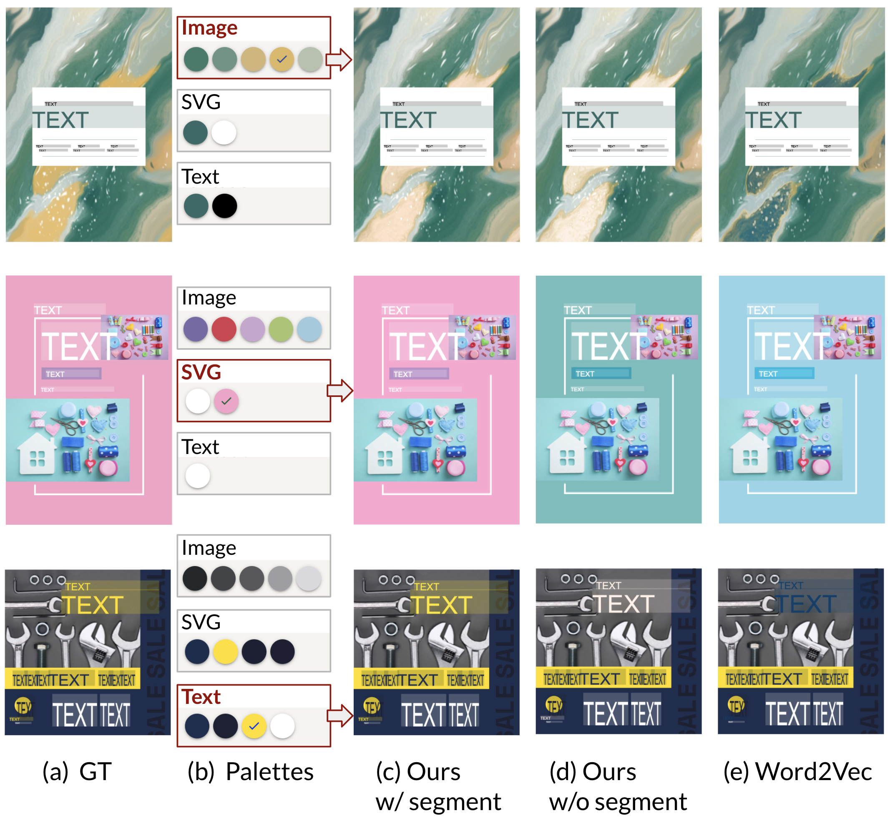

Color Recommendation for Vector Graphic Documents based on Multi-Palette Representation
Video
Abstract

Vector graphic documents present multiple visual elements, such as images, shapes, and texts. Choosing appropriate colors for multiple visual elements is challenging but crucial for amateurs and professional designers. Instead of creating a single color palette for all elements, we extract multiple color palettes from each visual element of a graphic document, and then combine them into a color sequence. We propose a masked color model for color sequence completion and recommend the specified colors based on the color context in multi-palette with high prob- ability. We train the model and build a color recommen- dation system on a large-scale dataset of vector graphic documents. The proposed color recommendation method outperformed other state-of-the-art methods by quantita- tive and qualitative evaluations on color prediction and our color recommendation system received positive feedback from professional designers in an interview study.
Method
Results

Color recommendation results with our proposed BERT-based models with and without segment embeddings, and the Word2Vec-based model. The three samples are recolored with one image color, one SVG color, and one text color.